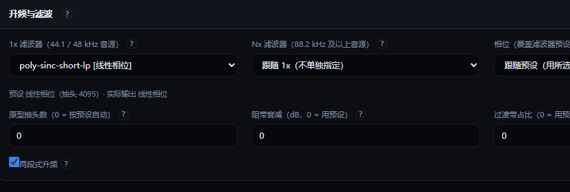
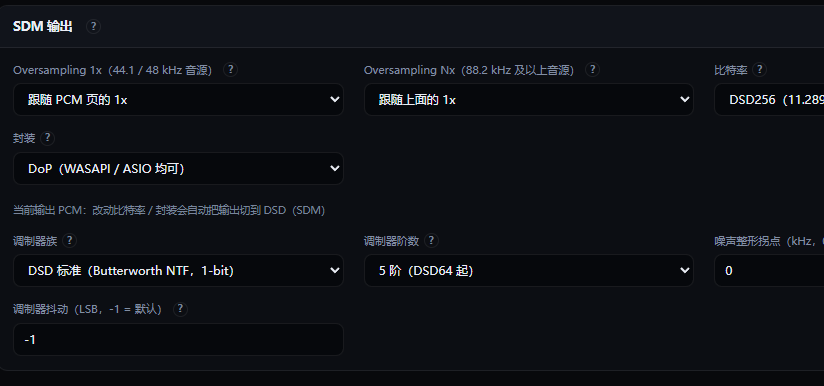
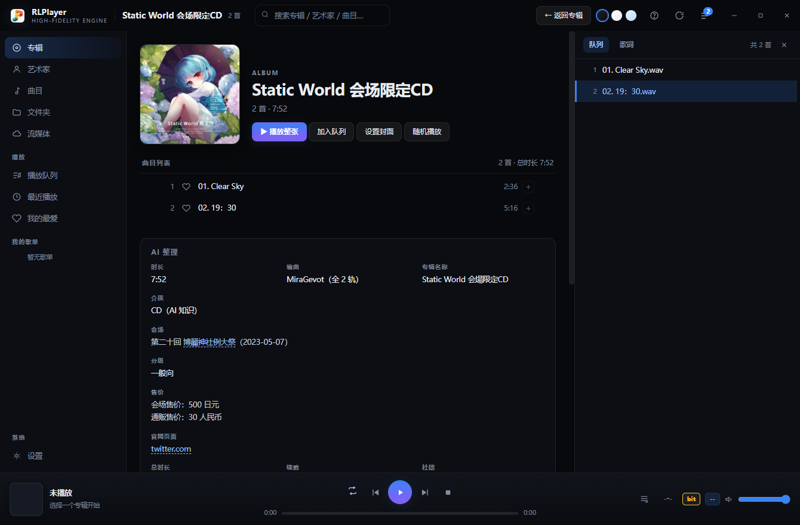
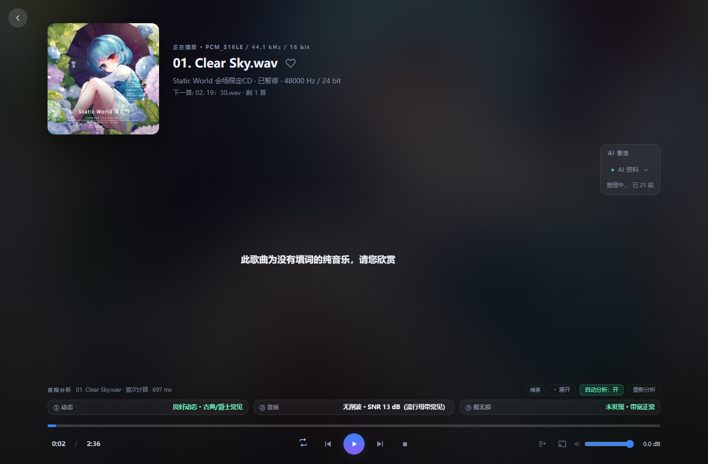

从解码到房间校正，从资料整理到假无损检测，每一块都做到底。
不是抄参数表。每个预设都跑过真实冲激响应，测出它在 44.1k→96k、44.1k→384k、
96k→384k、DSD64→384k 等六种组合下的 −3 dB 带宽、20 kHz 衰减与阻带深度。
线性相位、最小相位、混合相位三种选择；短抽头、长抽头、两段式；
每一个都能在设置里当场换，立刻听出差别。
调制器带限幅统计、过载计数与恢复判据。7 阶在 DSD64 实测稳定；DSD→DSD 异速率上行与下行都支持，44.1k / 48k 两族各自处理。
AMD HIP 与 NVIDIA CUDA 两条后端，卷积结果与 CPU 参考逐样本相等。
WASAPI 独占、ASIO 原生 DSD。当前是不是 bit-perfect，界面上直接写着。
检测 16k / 19k 砖墙、有效位深、削波与动态范围。播放时自动完成。
专辑与曲目的档案由 AI 检索、核对、整理成结构化字段，自动缓存。
每段独立设频率、增益、Q 与类型，拖动曲线即时生效；自动前级防削波，旁路时是真直通。
Farina 扫频测房间响应，反卷积生成校正卷积核，2.0 到 7.1.4 逐声道处理。
十档输出采样率、DSD64 / DSD128 原生输出，按设备能力自动推荐最优组合。
poly-sinc，-short 差别有多大
抽头按内插后的域预算：每相抽头 = 总抽头 ÷ 内插倍数。
所以同一个 poly-sinc-short-lp，44.1k→96k 时每相 12 抽头，
到 44.1k→384k 就只剩 4 抽头。
poly-sinc-tight-lp：每输入样本 512 抽头，与采样率无关-2s 后缀仅在 M=1 且 L≥8 时成立
量化器输入限幅、误差钳位、过载后的恢复判据——三道保护串在一起， 调制器再激进也不会把高音单元推爆。

接入大模型，自动检索、交叉核对、整理成结构化的专辑与曲目档案。 这是 RLPlayer 认真做的一块——让一个本地播放器也拥有在线资料库的深度。
模型先去查，再根据查到的材料写。引用外部页面时会核对归属： 专辑名、曲目列表、时长至少两项对得上，才被采信。

一首歌的源格式、输出格式、专辑归属、AI 档案、三段音频分析（动态 / 音质 / 假无损） 全部集中在一页里。AI 结果异步到达，不阻塞播放。

下面是这首歌此刻正在走的路。每一项都能在设置里换成别的做法。
RainLain、猫与小行星
聆听风暴
Gosed
Miyu、正在下载99%
Q 群 895816505
GPL-3.0-or-later
第三方组件见包内 THIRD-PARTY-NOTICES.txt